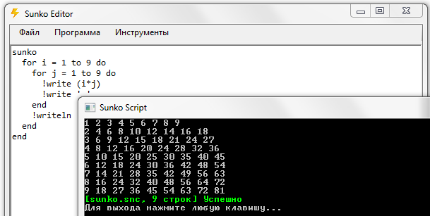

Список моих проектов
| Biker Franchise | ||
|---|---|---|
|
Biker 3
28.11.2018
actual
| Приключенческая ролевая игра в консольном интерфейсе | 
|
| kotov | ||
|
Biker 2
18.06.2018
20.03.2019
| 
| |
| github.com | ||
|
Biker 1
17.10.2017
23.10.2017
| 
| |
| github.com | ||
|
Biker
21.08.2017
24.08.2017
| 
| |
| github.com | ||
| Прочие | ||
|
KTX
30.12.2018
support
| Первая серьезная попытка написать библиотеку, которая бы сильно помогала при разработке консольного интерфейса. Впрочем, впоследствии я сделал более серьёзную библиотеку KTXCore. Однако, в KTX всё ещё есть неоспоримо огромный плюс - возможность конвертации картинок в консольные символы. Когда-нибудь я сделаю простеньку оболочку для этой библиотеки. Когда-нибудь. | 
|
| github.com | ||
|
Tropegen
15.06.2021
22.06.2021
| Программа-генератор персонажей с возможностью редактирования их характеристик. Этакая утилита-помощник писателю. Возможность переключения между списками персонажами, автоматическое сохранение этих списков на жесткий диск. | 
|
| github.com | ||
|
Sunko
17.08.2019
09.12.2019
| Одна из нарастающих попыток написать свой язык. Лучше предыдущих, но хуже последующих реализаций. Лучшую реализацию смотрите Язык квестов Biker 3 |  |
| github.com | ||
Ожидается, что я рано или поздно добавлю на этот сайт подробную информацию обо всех проектах, в том числе мелких.